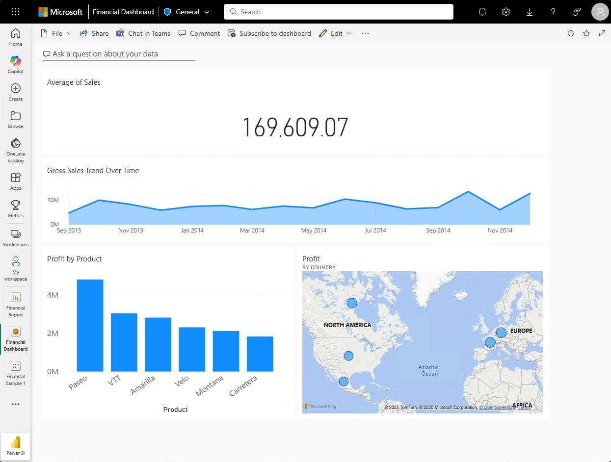
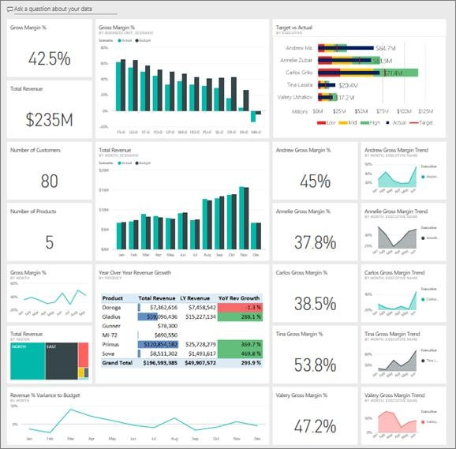
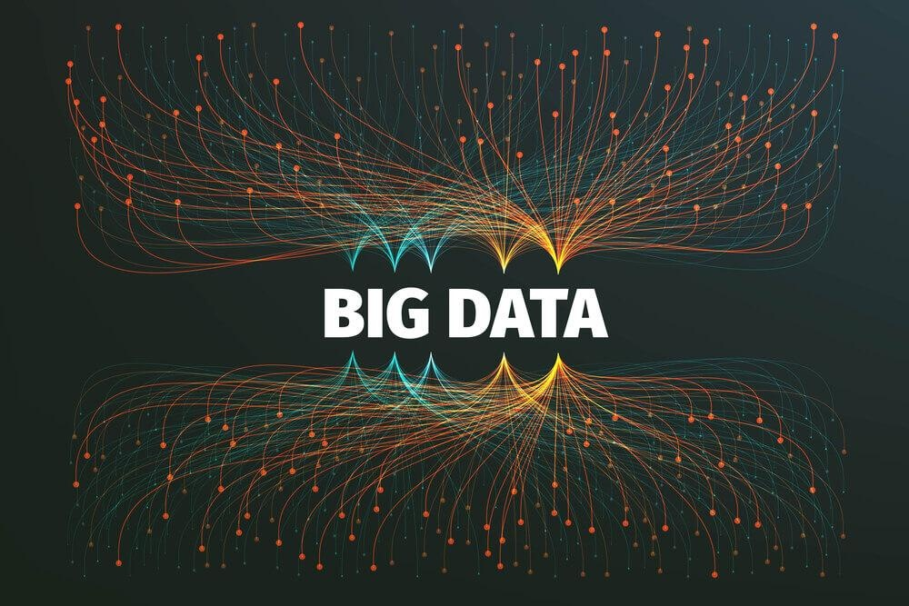
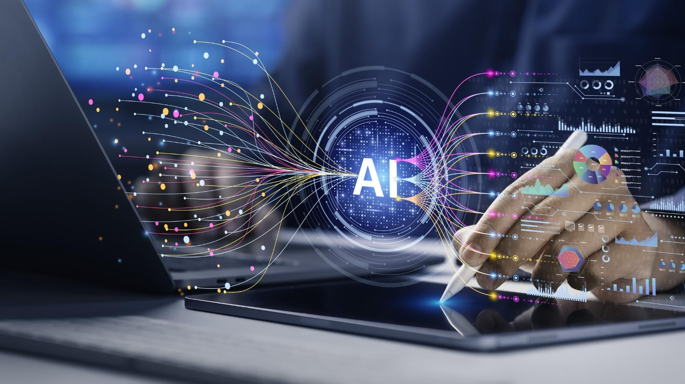
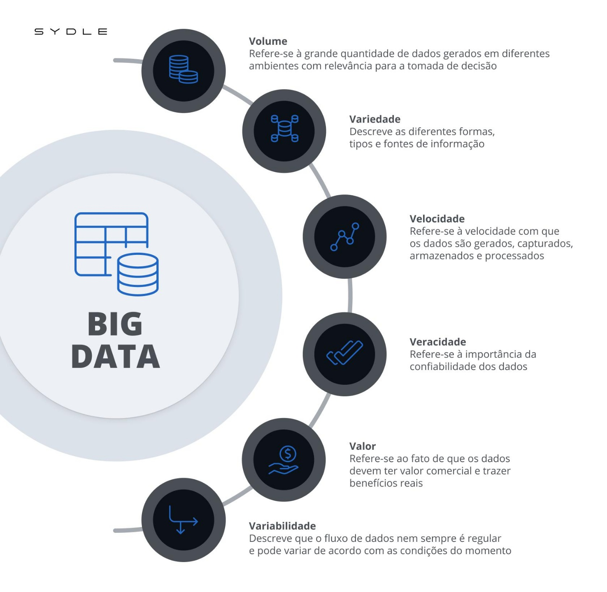

Tecnologia aplicada à análise de dados

Ferramentas de BI
As ferramentas de BI (Business Intelligence) transformam dados brutos de diversas fontes (ERP, CRM, SQL)
em insights estratégicos por meio de relatórios, dashboards interativos e análises, facilitando tomadas
de decisão rápidas e baseadas em fatos. Líderes de mercado incluem Microsoft Power BI, Tableau, Qlik,
Looker Studio e IBM Cognos.
Principais Ferramentas de BI em 2026
Microsoft Power BI:Líder de mercado, conhecido pela forte integração com ecossistema Microsoft
(Azure, Excel) e facilidade na criação de visualizações complexas.Tableau: Reconhecido pela capacidade de
visualização de dados sofisticada e intuitiva.
Qlik (Qlik Sense):Focado em análise de dados em tempo real e motores de busca associativos.Google
Looker Studio: Opção popular e acessível do Google, ideal para dashboards rápidos com diversas fontes de dados.
Zoho Analytics:Ferramenta com forte IA integrada para relatórios e análises.IBM Cognos Analytics:
Solução corporativa robusta.
Oracle Analytics Cloud:Plataforma completa para grandes volumes de dados.
Funcionalidades Essenciais de uma Ferramenta de BI
Conexão de Dados:Capacidade de se conectar a várias fontes (bancos SQL, nuvem, planilhas).
ETL (Extração, Transformação e Carga):Preparar e limpar dados (ex: Power Query no Power BI)
Dashboards Interativos:Visualização gráfica que permite filtrar e explorar dados em tempo real.
Análise Preditiva:Uso de IA para prever tendências futuras, não apenas analisar o passado.
BenefíciosTomada de Decisão Ágil:Reduz o tempo entre a coleta de dados e a ação.
Identificação de Tendências:Facilita a visualização de padrões de mercado.
Aumento da Eficiência:Automatiza a geração de relatórios, economizando tempo.
Dashboards e relatórios

Inteligência Preditiva e Visualização Automatizada
- IA no Design: Dashboards criados automaticamente com o auxílio de IA no Power BI e outras ferramentas,
focando em simplicidade e agilidade
- Análise Preditiva: Painéis não apenas mostram o passado, mas utilizam análise preditiva para antecipar
tendências e comportamentos do consumidor em tempo real.
- Centralização: Uso de Data Lakehouse para unificar dados, facilitando a criação de painéis táticos e estratégicos.
Banco de dados

Modelos Híbridos e Vetoriais
- Multi-model e Escalabilidade: Domínio de bancos de dados que suportam modelos relacionais e não estruturados
(documentos) simultaneamente, como PostgreSQL, MongoDB e Snowflake.
- Bancos Vetoriais (IA): Crescimento dos Vector Databases (ex: Milvus, Pinecone) para alimentar modelos de linguagem (LLMs).
- Data Lakehouse: Consolidação da arquitetura que combina o melhor dos Data Warehouses e Data Lakes.
Automação de processos

Hiperautomação e IA
- RPA + IA (Automação Inteligente): RPA (Robotic Process Automation) evolui para bots que aprendem, detectam sentimentos e
lidam com cenários complexos, não apenas regras simples.
- Agentes de IA: Uso de agentes especializados em tarefas específicas (em vez de apenas LLMs generalistas), integrando fluxos
de trabalho no RH, financeiro e logística.
- Eficiência Operacional: A combinação de RPA e IA reduz o tempo de ciclos (como compras) em até 30%.
Big Data e Inteligência Artificial

Do "Hype" à Estratégia:
- IA Operacional: A Inteligência Artificial é parte estratégica do cotidiano, redesenhando a gestão empresarial.
- Foco no ROI: Empresas estão focando na governança e planejamento da IA, movendo-se da "empolgação" (hype) para
aplicações práticas que resolvem problemas.
- Análise de Dados em Tempo Real: Uso intenso de Big Data para identificar gargalos de produção e prevenir fraudes.